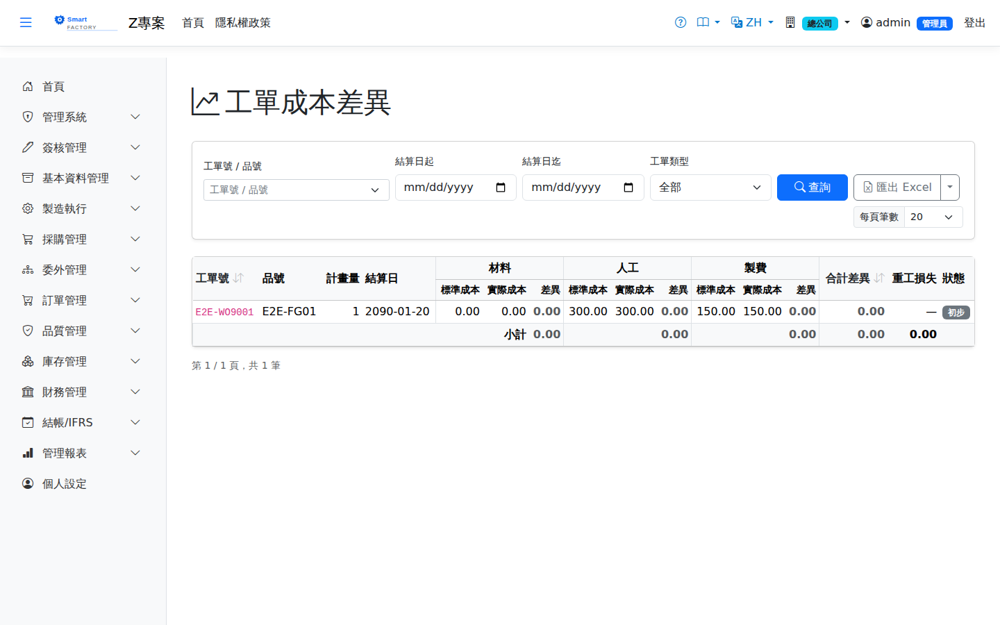

工單成本差異WO Cost Variance
彙總工單實際成本（材料/人工/製費）與標準成本的差異，拆解為用料差異、效率差異與費率差異。月末經實際費率重估後，差異會以調整分錄回刷（Preliminary → Final）。Compares the actual cost of a work order (material, labour, overhead) with standard and breaks the difference into usage, efficiency and rate variance. After the actual rates are re-estimated at month end, the variance is restated through an adjusting journal entry (preliminary → final).

實際成本從哪裡來Where actual cost comes from
本畫面是查詢工單實際成本的主要入口。實際成本不是隨時都有——它在工單生命週期的兩個時點才會產生與定案：This screen is the main place to look up a work order's actual cost. Actual cost is not available at all times: it is created and then finalised at two specific points in the work order's life cycle.
| 時點Point in time | 狀態Status | 發生什麼事What happens |
|---|---|---|
| 工單結案Work order closed | 初步Preliminary | 完工入庫並將工單結案時，系統自動結算一筆實際成本，把已發料、已報工的材料／人工／製費寫入，並與標準成本相減得出差異。此時人工與製費用的還是預估費率。When production is put away and the work order is closed, the system settles one actual-cost record: issued material, reported labour and overhead are written in and compared with standard to derive the variance. At this stage labour and overhead still use estimated rates. |
| 月結費率重估Month-end rate re-estimate | 最終Final | 月結作業執行「實際費率重估」後，以該期間的部門實際費用重算人工與製費，差額以調整分錄回刷，狀態轉為「最終」。Once the month-end run performs the actual rate re-estimate, labour and overhead are recalculated from that period's departmental actual costs, the difference is restated through an adjusting journal entry, and the status becomes "Final". |
① 工單尚未結案——生產中的工單在本畫面完全沒有資料列。在製中的成本請改看在製品報表。
② 該期間尚未做月結重估——看得到資料，但狀態是「初步」，代表人工與製費之後還會變動。要把數字當定案用（對外報價、績效考核、帳務分析），請先確認狀態是「最終」。 Two situations make actual cost look "missing", and neither is a fault:
(1) The work order is not closed yet — work orders still in production have no row at all on this screen. For cost still in progress, use the WIP report instead.
(2) The month end has not re-estimated that period yet — the rows are there but the status reads "Preliminary", meaning labour and overhead will still change. Before treating the figures as settled (quoting, performance review, accounting analysis), check that the status is "Final".
查詢Search
欄位說明Field reference
查詢條件Query criteria
| 條件Condition | 說明Guide |
|---|---|
| 工單號 / 品號WO No. / Product | 關鍵字模糊比對Keyword (partial match) |
| 結算日起 / 迄Settlement date from / to | 依工單成本結算日區間篩選Filters by the work order cost settlement date range |
| 工單類型WO Type | 一般／重工／委外，留空＝全部；匯出也套用此條件Normal / Rework / Outsource; leave blank for all. Exports apply the same filter |
報表欄位Report fields
| 欄位Field | 說明Guide |
|---|---|
| 工單號 / 品號WO No. / Product | 已結算的工單與其生產料件Settled work orders and the items they produce |
| 工單類型WO Type | 標在工單號下方：重工（黃色）／委外；一般工單不標Shown under the work order number: Rework (yellow) / Outsource; normal work orders carry no tag |
| 計畫量Planned qty | 工單的計畫產出數量Planned output quantity of the work order |
| 結算日Cost Date | 工單實際成本結算的日期Date the work order's actual cost was settled |
| 材料 / 人工 / 製費Material / Labour / Overhead | 三大成本要素各自的「標準成本、實際成本、差異」三欄；差異＝實際 － 標準，正數為超耗Standard cost, actual cost and variance for each of the three cost elements; variance = actual − standard, a positive figure meaning over-consumption |
| 合計差異Total Variance | 三要素差異的加總，即該工單的整體成本超耗或節省Sum of the three element variances, i.e. the overall cost overrun or saving on the work order |
| 重工損失Rework Loss | 只有重工工單有值：實際總成本超出「發進來的不良品原值」、沒有回到存貨而轉入 5250 重工損失的金額（見下方「重工成本」）。之後的月結費率重估差額照一般工單進製造成本差異，不改這一欄Rework work orders only: the part of the actual total cost above the original value of the defective items issued in, which did not go back to inventory but was charged to 5250 Rework Loss (see "Rework cost" below). Later month-end rate re-estimate differences go to manufacturing cost variance as for any work order and do not change this column |
| 狀態Status | 結算狀態。初步＝工單結案時以預估費率結算，人工／製費之後會變；最終＝該期間已完成實際費率重估，數字已定案。判讀金額前務必先看這一欄Settlement status. Preliminary = settled at work order close using estimated rates, so labour and overhead will still change; Final = the period's actual rate re-estimate is done and the figures are settled. Always read this column before interpreting the amounts |
重工成本Rework cost
重工工單的成本屬於品質異常成本，與正常生產分開統計。完工入庫時：The cost of a rework work order is a quality failure cost and is reported separately from normal production. At completion receipt:
查詢結果有重工工單時，表格下方會列出重工工單張數、實際成本合計與其中的重工損失。When the results include rework work orders, a line below the table shows how many there are, their total actual cost and how much of it is rework loss.
相關畫面Related screens
完工入庫Production Putaway、在製品報表WIP Report、月結作業Month-End Close、部門實際費用Department Actual Cost